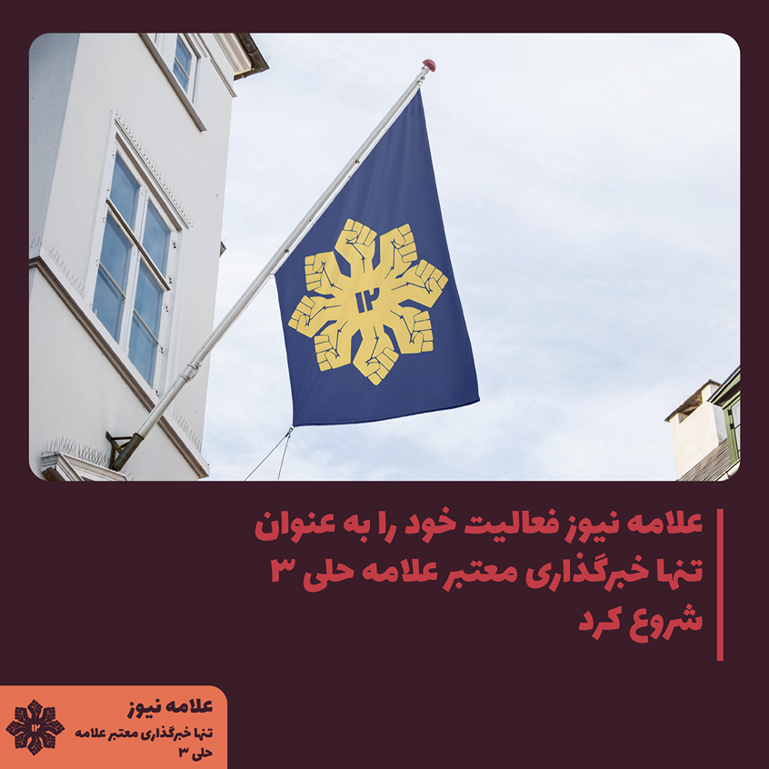

توجه: این خبر بر اساس داده های قدیمی نوشته شده است و دیگر معتبر محسوب نمیشود، خواهشا خبر های جدید ما را چک کنید.
انتخابات شورای دانش آموزی پایه نهم بسیار نزدیک است و بر اساس تقویم اجرایی در
تاریخ 24 مهر برگزار خواهد شد.
بنا بر اطلاعات محدود ما از کلاس 301 محمد حاجی کندی، از کلاس
302 ایلیا سلیمانی، فرهام جلیلی و پادرا فتاحی و از کلاس 303 مانی سوری، آریا نظری و امیررضا قاینی قصد
کاندید شدن دارند. بنظر می آید که کلاس 303 بیشترین رقابت و کلاس 301 کمترین رقابت را خواهد
داشت.
با توجه به اینکه اکثر کاندید ها در شورا های قبلی حضور داشته اند احتمالا بخش زیادی از
تبلیغاتشان به توضیح دادن کار های گذشته شان پرداخته می شود.